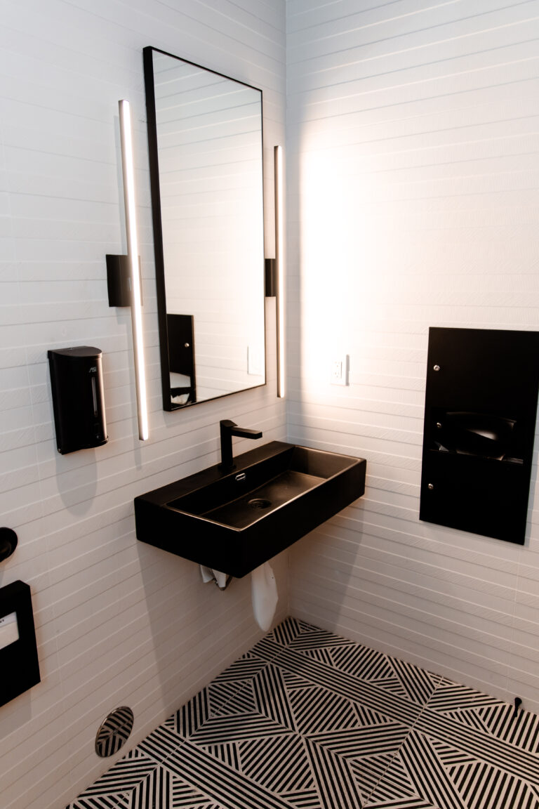

Brush without the sink turning pink.
Bleeding gums are usually inflamed gums. Treatment goes after the cause under the gumline, not the symptom above it.

Treatment for bleeding, receding and infected gums, from early gingivitis through to advanced periodontal disease.
Gum disease does not hurt at the stage where it is easiest to treat. That is the whole problem with it.
What you see instead is pink in the sink. A little blood when you brush, and gums that look puffy at the edge.
Later the gum pulls away from the tooth and a pocket forms. Deeper pockets tend to house more bacteria, below where a toothbrush reaches.
Left alone, the infection works on the bone that holds the tooth in its socket. Bone loss is how gum disease ends in a lost tooth.
Cost is part of why people wait for it to hurt. The ADA Health Policy Institute reports that 55% of adults aged 65 and older have no dental benefits, fetched 30 July 2026. Dental visits track coverage directly.

Bleeding gums are usually inflamed gums. Treatment goes after the cause under the gumline, not the symptom above it.
Pocket depths are measured and written down. You get told what they are, and what they were last time.
Once bone is lost it does not come back on its own. Acting at the shallow stage keeps the work small.

Periodontal care is a long relationship, so continuity matters. Ours runs inside one practice across seven offices in Las Vegas, North Las Vegas and Henderson.
Where offices are separately owned or separately branded, consistency across them cannot be promised structurally. We are one practice with one clinical roster, and our team page names the ten dentists on it.
A clinician probes each tooth and charts the pocket depths. Digital X-rays may reveal bone loss. You see the chart, not a verdict.
Scaling and root planing removes the deposit inside the pocket. That is the groundwork every later step depends on.
Depending on the pocket, that can mean a localised antibiotic or laser assisted treatment with the SIROlaser. Both are done here.
Gum disease is managed, not closed out in one visit. The next chart is read against this one.
Our Lake Mead office is rated 4.5 stars across 506 patient reviews on Birdeye, fetched 30 July 2026.
The figure belongs to that office only.

The BBB profile for this practice, fetched 30 July 2026, lists 23 years in business and a rating of B+. The same profile records that the practice is not BBB accredited, with 3 complaints filed and 1 of them unresolved.
Our clinicians are named with their credentials. Dr. Adrian Ruiz holds a DDS from UCLA, 1995. Dr. Norma Miranda holds a DDS from UCLA, 1976. Both are recorded on our own team page, fetched 30 July 2026.


It depends on how many teeth are involved and how deep the pockets are. We quote after charting, and we do not publish treatment prices.
Coverage depends on your plan and on how the treatment is coded. Named plans are listed in full on our insurance and financing page. Network status varies by office and by plan. Contact the office you want with your plan details before you book.
The area is numbed first. Gums that are already inflamed can be tender afterwards. We will not promise comfort, and we will tell you what to expect.
Early inflammation can settle. Once bone has been lost, the aim is to stop the loss and hold it there. We will be straight with you about which stage you are at.
Also:
new patient offerNew patients can start with our $45 exam and X-ray, or $29 if you are a senior.
Both are published on our own site and were current on 30 July 2026.
Payment plans are available through Care Credit, Cherry, Sunbit and Lending Club. Terms are set by the lender and are subject to credit approval. They are not terms offered by this practice.